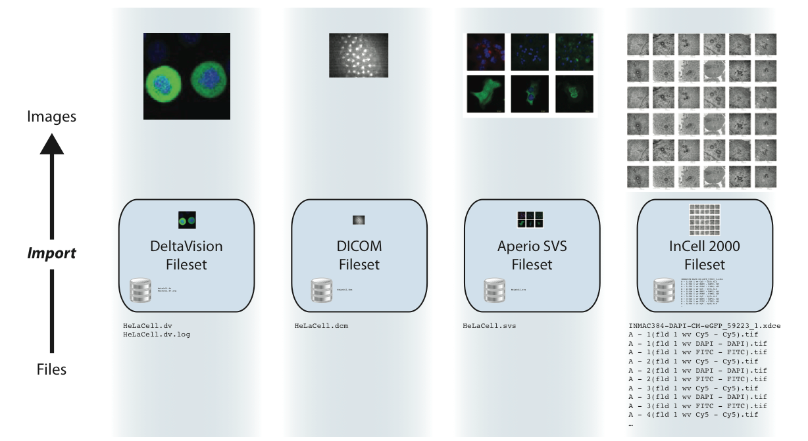
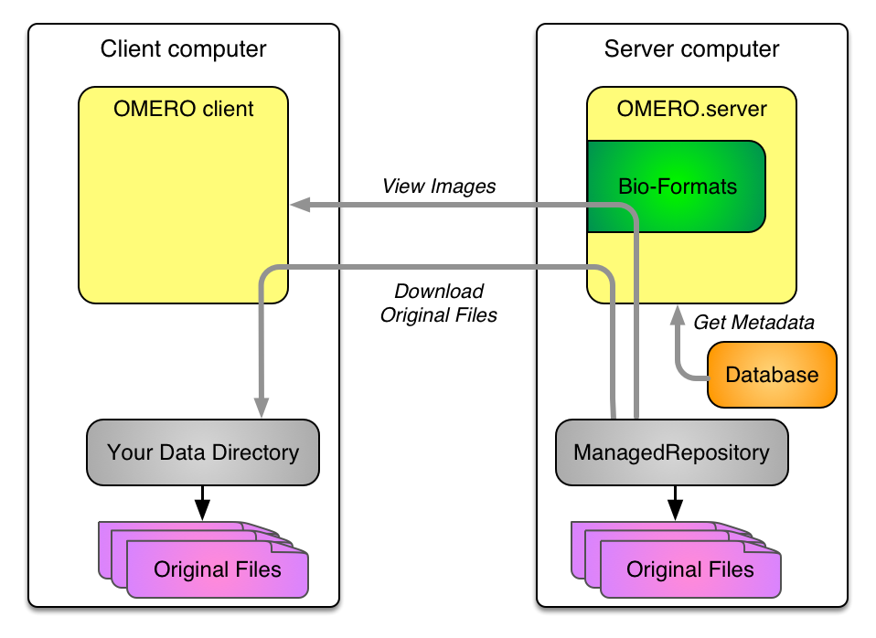
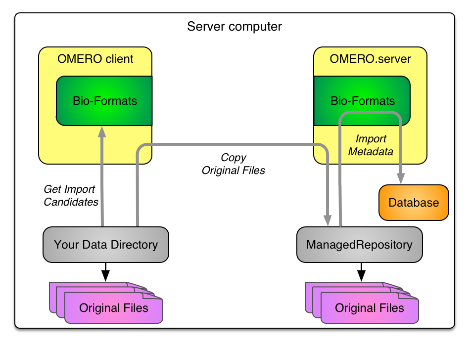
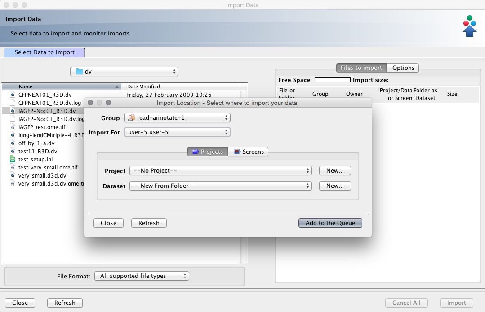
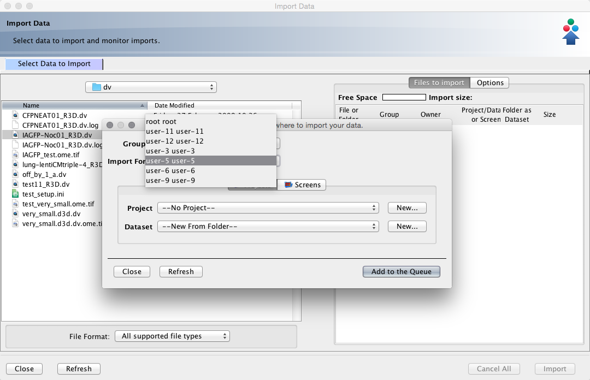
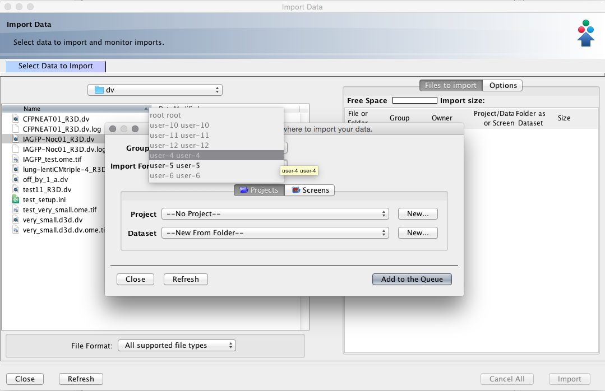

Improving Imports with OMERO 5.x
Paris 2015
Colin Blackburn, Mark Carroll & Josh Moore
Outline
- Import in OMERO 5
- More ways to import
- Improving import efficiency
- A few more improvements
- Discussion
Import in OMERO 5
A quick reminder...
- ManagedRepository
- Filesets
- Basic OMERO 5 Import
ManagedRepository

Filesets
OMERO 5 Import

OMERO 5 Data out
More on ManagedRepository and Filesets
More ways to import
- Upload and copy
- In-place
- Import for
Import: upload
$ bin/omero import path/to/image -- --transfer=upload
Import: upload and remove
$ bin/omero import path/to/image -- --transfer=upload_rm
Import: upload and remove
$ bin/omero import path/to/image -- --transfer=upload_rm

Import: copy
$ bin/omero import path/to/image -- --transfer=cp

Import: copy and delete
$ bin/omero import path/to/image -- --transfer=cp_rm
Import: copy and delete
$ bin/omero import path/to/image -- --transfer=cp_rm

In-place import: hard link
$ bin/omero import path/to/image -- --transfer=ln

In-place import: move
$ bin/omero import path/to/image -- --transfer=ln_rm
In-place import: move
$ bin/omero import path/to/image -- --transfer=ln_rm

In-place import: soft link
$ bin/omero import path/to/image -- --transfer=ln_s

Import: CLI summary
bin/omero import --advanced-help
--transfer=ARG File transfer method
General options:
upload # Default
upload_rm # Caution! Upload followed by source deletion.
some.class.Name # Use a class on the CLASSPATH.
Server-side options:
cp # Use local copy command.
cp_rm # Caution! Copy followed by source deletion.
ln # Use hard-link.
ln_rm # Caution! Hard-link followed by source deletion.
ln_s # Use soft-link.
e.g. $ bin/omero import -- --transfer=ln_s foo.tiff
$ ./importer-cli --transfer=ln bar.tiff
Use cases
- Upload
- data on separate system
- remote import
- Copy
- data on same system, lower network overhead
- Hard link
- very large data on OMERO server
- Soft link
- DropBox on OMERO server
Import for: using Insight
Import for: using Insight
Import for: using Insight

Import for: using Insight
Import for: using the CLI
bin/omero login -u john --sudo jane
Password for jane:
Created session f49d2...65250 (john@...). Current group: skyelab
bin/omero import ~/Images/dv/IAGFP-Noc01_R3D.dv
Using session f49d2...65250 (john@...). Current group: skyelab
...
==> Summary
2 files uploaded, 1 fileset created, 1 image imported,
0 errors in 0:00:21.602
More efficient imports
- Background imports
- Faster imports
Background imports
--auto_close Close completed imports immediately.
--minutes_wait=ARG Choose how long the importer will wait on
server-side processing.
ARG > 0 implies the number of minutes to wait.
ARG = 0 exits immediately.
Use a *_completed option to clean up.
ARG < 0 waits indefinitely. This is the default.
--close_completed Close completed imports.
--wait_completed Wait for all background imports to complete.
e.g. $ bin/omero import -- --auto_close file1.tiff
$ bin/omero import -- --minutes_wait=0 img1.tiff img2.tiff img3.tiff
$ bin/omero import -- --wait_completed # Waits on all 3 imports.
Faster imports
--checksum-algorithm=ARG Choose a possibly faster algorithm
for detecting file corruption,
e.g. File-Size-64 (fastest),
Adler-32 (faster), CRC-32 (faster),
MD5-128, Murmur3-32, Murmur3-128,
SHA1-160 (slower, default)
e.g. $ bin/omero import -- --checksum-algorithm=CRC-32 foo.tiff
$ ./importer-cli --checksum-algorithm=Murmur3-128 bar.tiff
--no-stats-info Disable calculation of minima and maxima when
not part of the Bio-Formats reader metadata
--no-thumbnails Do not perform thumbnailing after import
--no-upgrade-check Disable upgrade check for each import
Faster imports
bin/omero import --help
--skip {all,checksum,minmax,thumbnails,upgrade}
Optional step(s) to skip during import
A few numbers
| default | symlink & skip all | |||||
|---|---|---|---|---|---|---|
| format | size | files | total | link | import | total |
| Zeiss CZI | 200GB | 6 | 4.5h | 6s | 3m | 3m |
| SPIM (OME-TIFF) | ~2TB | ~3600 | ~days! | 14m | 16m | 30m |
| SVS | 90GB | 465 | 1.5h | 7m | 23m | 30m |
A few more improvements
- Excluding duplicates
- Cleanse
- bin/omero fs
Excluding duplicates
--exclude=filename Exclude files based on filename.
e.g. $ bin/omero import -- --exclude=filename foo.tiff
# First call imports
$ bin/omero import -- --exclude=filename foo.tiff
# Second call skips
$ bin/omero import foo.tiff
# This call imports again
Remove empty directories
bin/omero admin cleanse --help
usage: omero admin cleanse [--dry-run] data_dir
Remove binary data files from OMERO
Deleting an object from OMERO currently may not remove all the binary data.
Use this command either manually or in a cron job periodically to remove
Pixels, empty directories, and other data.
Examples:
bin/omero admin cleanse --dry-run /OMERO # Lists files to be deleted.
bin/omero admin cleanse /OMERO # Actually delete them.
bin/omero fs
bin/omero fs --help
usage: omero fs <subcommand> ...
Filesystem utilities
<subcommand>
images List images, filtering for archives, etc.
rename Moves an existing fileset to a new location (admin-only)
repos List all repositories.
sets List filesets by various criteria
usage Shows the disk usage for various objects.
Move a fileset
bin/omero fs rename --help
usage: omero fs rename [--no-move] fileset
Moves an existing fileset to a new location (admin-only)
After the import template (omero.fs.repo.path) has been changed,
it may be useful to rename an existing fileset to match the new
template. By default the original files and import log are also
moved.
Positional Arguments:
fileset Fileset which should be renamed: ID or Fileset:ID
Optional Arguments:
--no-move do not move original files and import log
Report disk usage
bin/omero fs usage --help
usage: omero fs usage [obj [obj ...]]
Shows the disk usage for various objects.
Examples:
bin/omero fs usage # total usage for current user
bin/omero fs usage --report # more detailed usage for current user
bin/omero fs usage --groups # total usage for current user's groups
# total usage for five images with minimal output
bin/omero fs usage Image:1,2,3,4,5 --size_only
# total usage for all images with in a human readable format
bin/omero fs usage Image:* --human-readable
# total usage for all users broken down by user and group
bin/omero fs usage Experimenter:* --report --sum-by user group
Report disk usage
bin/omero fs usage Experimenter:6 --report --sum-by component --human-readable
Total disk usage: 1.7 TB bytes in 3823 files
component | size | files
--------------+----------+-------
Annotation | 16.5 MB | 82
FilesetEntry | 1.7 TB | 3638
Job | 396.0 KB | 14
OriginalFile | 80.8 KB | 58
Pixels | 86.5 MB | 10
Thumbnail | 34.0 KB | 21
(6 rows)
The future...
- import location by path
- importer role
- extra performance
- cron - later thumbnailing, etc.
- new features presented in Insight
- web import
- re-import
Thanks!
- the "import team"
- the OME team
- the user community